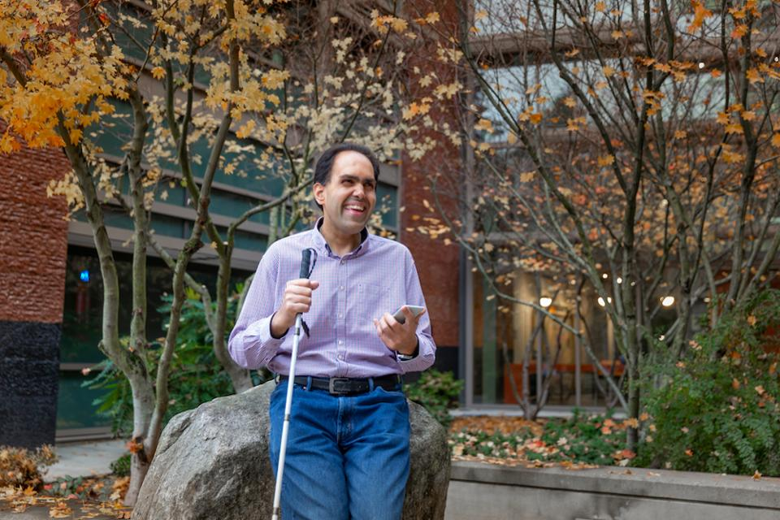

 Hi, I'm Saqib Shaikh - a software developer from London, England, and currently working for Microsoft on Bing.
I like making things. As a child at boarding school this ranged from writing to pottery to woodwork to electronics. And then one day, when I was 13, a kid showed me how to use Basic to choose six random numbers for the recently introduced National Lottery - I was hooked. I taught myself to program in C, and started selling my apps around school. Many years later, I still love using technology to create solutions to peoples' problems - I measure success by the smile it produces.
I went on to study Computer Science at Essex, where I graduated top of my class; and study Evolutionary and Adaptive Systems at Sussex, with an internship at HP Labs. I started my career by spending a year at Vodafone, learning the ways of the business world, before making my way to Microsoft.
I spent 3¼ years in Microsoft Consulting Services, helping customers develop solutions on the Microsoft stack; projects ranged from internal solutions for large enterprises like Citibank and Chevron, to government solutions for HMRC and the NHS, to proof of concepts for startups like Micro Librarian Ssystems and IWantGreatCare.org.
I've spent the last 3+ years working on Bing's backend algorithms; mining data to produce the information displayed on the search results page to complement the core results. For example, suggesting "related searches" that may lead you to the information you seak, identifying "deep links" to take you to common destinations within a search result, or determining the order in which elements should appear on the page.
If you want to get in touch, you can email "me" at this domain, or ping me on Twitter. You can also find me on various social networks.